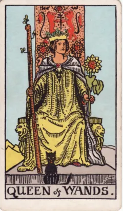
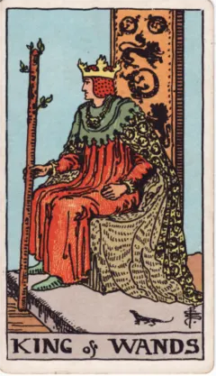
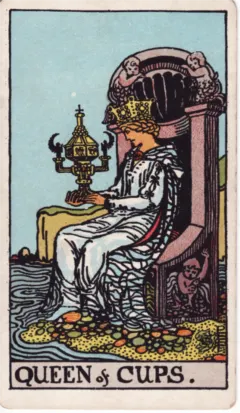
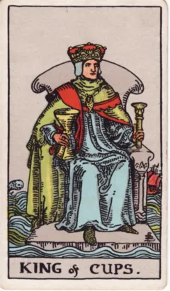
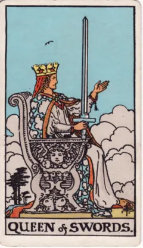
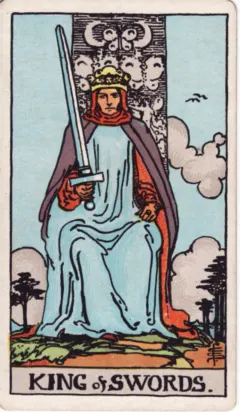
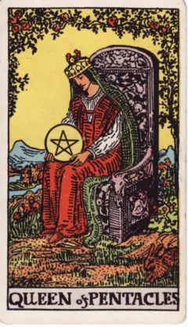
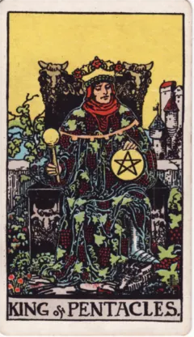

Раздел 9 · Четыре масти в действии · Урок 38
Королевы и Короли: вместить и направить
Как по-разному можно зрело обращаться с силой масти?
Зрелое обращение с силой масти может принимать разные формы. Сравним Королев и Королей по позе, среде и предметам и проверим рабочую схему курса на каждой картинке.
После урока Вы сможете: сравнить Королеву и Короля одной масти по тому, как они держат её предмет и в какой среде сидят, и назвать способ зрелого действия, который Вы хотели бы освоить в конкретном деле.
Сначала рассмотрим людей на тронах
У Королевы кубков взгляд обращён к чаше, у Королевы мечей меч поднят и ладонь открыта. Королева пентаклей держит предмет среди живой среды, Королева жезлов сочетает жезл с подсолнухом. Четыре способа присутствия не помещаются в один ярлык «женская энергия». В прошлом уроке Пажи и Рыцари учились и пробовали; здесь — две зрелые ступени придворных.
Ответственность за проявление
Короли позволяют исследовать направление воли, чувств, суждения и ресурсов. Король кубков находится среди волн, Король мечей держит прямую позицию, Король пентаклей окружён знаками устойчивости. Вопрос «как управлять этим качеством?» полезнее автоматического поиска начальника или партнёра. У Уэйта, в части III его руководства, у Королей и Королев есть и внешние приметы, и значения «человека»: это его система, и в нашей первой практике мы её не повторяем.
Две зрелые роли
Для учебного сравнения можно видеть в Короле направление и внешнюю ответственность, в Королеве — удержание качества и создание среды. Это рабочая схема курса, не запрет на активность Королев или восприимчивость Королей. Сверьте её с каждой картинкой и отметьте, где она помогает, а где становится тесной.
Куда дальше
Раздел о мастях закончен: Вы прошли сорок числовых карт и шестнадцать придворных. Следующий раздел возвращается к каббале: сначала — как еврейские буквы становятся числами (урок 45, гематрия), затем — как западная система соответствий связывает десять рангов числовых карт с десятью сефирот (урок 39).
Попробуйте сами
Работаем с изображением
Выберите одну масть и положите рядом её Королеву и Короля. Запишите, как каждый держит предмет масти и что его окружает, и только потом откройте учебное прочтение. Затем посмотрите, где схема «Королева — среда, Король — направление» подходит, а где тесна.

Придворная карта
Королева жезлов
Показать учебное прочтение курса
Что нарисовано. Жезл, подсолнух и кошка возле трона.
Учебное прочтение курса. Тёплая уверенность поддерживает инициативу. Рассматривайте манеру присутствия, а не обязательный пол или внешность человека.
Как поддержать чужую инициативу, сохраняя свой огонь?
Руководство Уэйта: оглавление ↗
Придворная карта
Король жезлов
Показать учебное прочтение курса
Что нарисовано. Фигура на троне держит живой жезл.
Учебное прочтение курса. Энергия получает направление и ответственность. Задавая курс, важно учитывать, как за ним пойдут другие.
Куда я направляю общие усилия?
Руководство Уэйта: оглавление ↗
Придворная карта
Королева кубков
Показать учебное прочтение курса
Что нарисовано. Фигура смотрит на украшенную чашу у воды.
Учебное прочтение курса. Глубокая восприимчивость нуждается в границе. Внимание к чужому переживанию не означает раствориться в нём.
Как сочувствовать, сохраняя опору?
Руководство Уэйта: оглавление ↗
Придворная карта
Король кубков
Показать учебное прочтение курса
Что нарисовано. Трон среди волн, в руках чаша и скипетр.
Учебное прочтение курса. Устойчивое обращение с чувствами допускает их движение. Спокойствие можно исследовать как навык, а не отсутствие эмоций.
Как оставаться в разговоре при сильных чувствах?
Руководство Уэйта: оглавление ↗
Придворная карта
Королева мечей
Показать учебное прочтение курса
Что нарисовано. Прямой меч и ладонь, обращённая наружу.
Учебное прочтение курса. Ясное различение сочетается с готовностью выслушать. Граница не обязана становиться холодностью или приговором.
Как сказать точно и оставить место ответу?
Руководство Уэйта: оглавление ↗
Придворная карта
Король мечей
Показать учебное прочтение курса
Что нарисовано. Фигура сидит прямо с мечом перед собой.
Учебное прочтение курса. Решение опирается на принципы и оценку. Важно замечать пределы собственного суждения даже при больших полномочиях.
На каком основании я выношу решение?
Руководство Уэйта: оглавление ↗
Придворная карта
Королева пентаклей
Показать учебное прочтение курса
Что нарисовано. Пентакль в руках фигуры среди сада.
Учебное прочтение курса. Забота выражается в устройстве повседневности: еда, пространство, время, телесное удобство. Роль доступна человеку любого пола.
Как сделать среду удобнее для жизни и работы?
Руководство Уэйта: оглавление ↗
Придворная карта
Король пентаклей
Показать учебное прочтение курса
Что нарисовано. Трон среди знаков достатка и растительности.
Учебное прочтение курса. Умение распоряжаться ресурсами проверяется устойчивостью созданного. Богатство образа не равно обещанию денег.
Что делает моё дело устойчивым?
Руководство Уэйта: оглавление ↗Проверим себя?
Ошибиться здесь не страшно: ответ проверяется сразу, а подсказки ничего не отнимают — ни баллов, ни отметок. К каждому варианту — своё пояснение; если и со второй попытки не получилось, откроется подсказка и верный ответ, и вопрос будет считаться разобранным.
Выберите ответ — он проверится сразу.
А как бы Вы это объяснили?
Какой способ зрелого действия Вы хотели бы освоить и в каком конкретном деле? Опирайтесь на Королеву или Короля одной масти и назовите деталь рисунка.
Начните любую строку — подсказка в поле исчезнет, как только Вы начнёте писать.
Вопрос перед образцом. Чего Вам не хватает в этом деле: удержать качество и создать среду или задать направление?
Один из возможных ответов откроется здесь, когда Вы напишете хотя бы строку или отметите, что обдумали вопрос без записи.
Посмотреть один из возможных ответов
Карта: Король кубков — трон среди волн, в руках чаша и скипетр. Способ действия: оставаться устойчивым, когда чувства движутся, не подавляя их. Дело, где он нужен: трудные разговоры с сестрой — хочу замечать своё чувство и продолжать разговор.
Что в образце есть, чего нет у Вас? А что есть у Вас, чего в нём нет?
Урок будет отмечен, когда все три вопроса разобраны (с подсказкой тоже считается) и есть запись или отметка «без записи».
Если хочется прочитать дальше
- Рассмотрите карты в практической части урока. Описания придворных карт и их значения — у Уэйта в части III «The Pictorial Key to the Tarot» («The Lesser Arcana»).
A. E. Waite · The Pictorial Key to the Tarot
Текст 1910 года к системе Уэйта–Смит; иллюстрации Памелы Колман Смит.